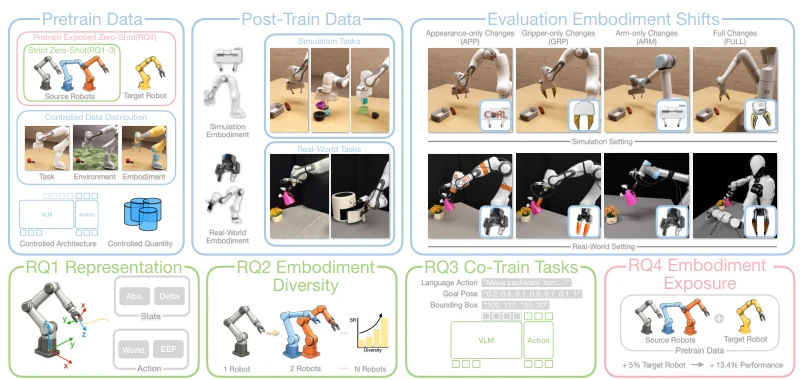
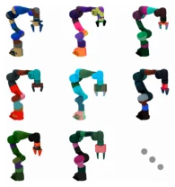
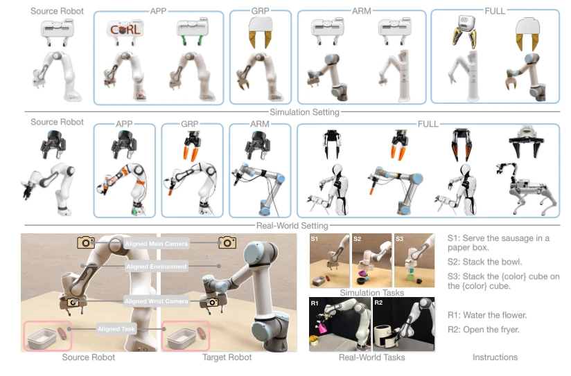
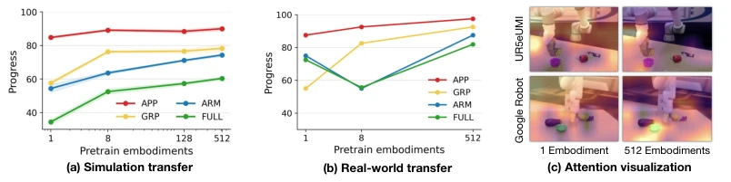
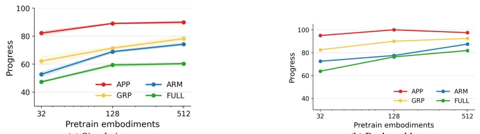
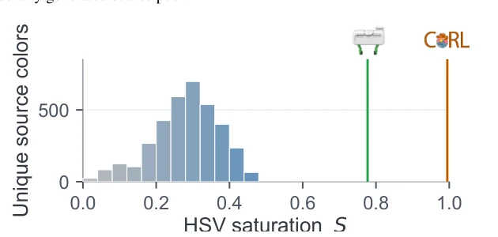
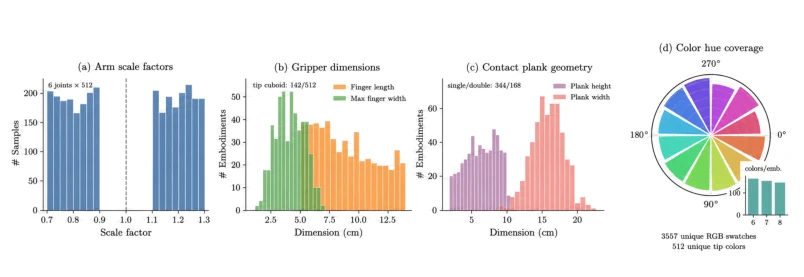

This paper pours cold water on the chaotic research on cross-embodiment zero-shot transfer, yet also clarifies the rationale. The authors did not employ large models, but instead conducted a benchmark test based on the 'control variable method', clearly distinguishing between 'strict zero-shot' and 'pre-training exposure'. The highlight lies in quantifying the impact of different factors (representation, diversity, auxiliary tasks, target exposure), such as discovering that pre-training with only 5% target data can yield a 13.4% improvement. The drawback is that the scenarios are too limited, focusing only on table-top operations and two-finger grippers, far from true general-purpose robots. Moreover, although the sim-to-real gap was addressed via randomization, the real-world results still exhibited some non-monotonicity, indicating that controlling variables is not that easy in the physical world.
研究动机Motivation
具身智能模型要落地，必须解决硬件迭代导致的数据收集成本问题。然而现有文献对“零样本迁移”定义混乱，有的把目标机器人排除在所有训练外，有的却允许出现在预训练中，导致结果不可比。此外，现有评估常将实体变化与任务、场景、相机差异耦合，难以归因。如 Open X-Embodiment [1] 虽汇聚多机器人数据，但未隔离实体差异。本文旨在建立受控基准，区分严格零样本与预训练暴露，量化实体迁移的真实难度。
For embodied AI models to be deployed, the issue of data collection costs caused by hardware iterations must be addressed. However, existing literature has a confused definition of 'zero-shot transfer'; some exclude the target robot from all training, while others allow it to appear in pre-training, resulting in incomparable outcomes. Furthermore, existing evaluations often couple entity variations with task, scene, and camera differences, making attribution difficult. For instance, Open X-Embodiment [1] aggregates data from multiple robots but does not isolate entity differences. This paper aims to establish a controlled benchmark, distinguishing between strict zero-shot and pre-training exposure, to quantify the true difficulty of entity transfer.

Figure 1: Overview of our controlled study. We distinguish strict zero-shot transfer, where the target robot is absent from all training data, from pretrain-exposed zero-shot transfer. Under a controlled benchmark, we conduct fine-grained analyses across four embodiment shift categories, covering four research questions (RQ) on state-action representations, source-embodiment diversity, auxiliary co- training, and target-embodiment exposure.
Overall, a two-stage training approach is adopted: pre-training followed by downstream fine-tuning. The core lies in constructing a controlled benchmark; pre-training utilizes 512 procedurally generated Franka-style entities, while the test set includes 7 unseen entities. The method revolves around four research questions: RQ1 compares state-action representations (world coordinates vs. EEF coordinates); RQ2 explores the impact of source entity diversity (1 vs. 512) on transfer; RQ3 evaluates auxiliary co-training tasks (language-action, subgoals, etc.); RQ4 analyzes the effect of introducing a small amount of target entity data during the pre-training phase. In terms of data construction, domain randomization is used to reduce the sim-to-real gap, and test scenes are strictly matched to isolate variables.

Figure 2: Procedurally generated embodiment pool for pretraining.

Figure 3: Evaluation setup for controlled cross-embodiment transfer. We evaluate seven held-out target embodiments across four shift categories in simulation and the real world, carefully matching post-training and test scenes to align non-embodiment factors (cameras, environments, and tasks).
Validation was conducted in both simulation and the real world, with the metric being task completion progress. In simulation, 512 source entities outperformed the single source, and the EEF-Delta representation improved by approximately 15%. The real world validated the trend, but found non-monotonicity when increasing the number of sources under a fixed total budget. Auxiliary co-training improved performance by approximately 7%. Most surprisingly, regarding RQ4, adding only 5% target entity data during pre-training improved average progress by 13.4%, proving that strict zero-shot and pre-training exposure should be reported separately. Ablation studies confirmed that representation choice is most critical for strict transfer.

Figure 5: RQ2: effect of source-embodiment diversity under a fixed pretraining budget. The 512- source setting improves over the single-source setting in both simulation (a) and the real world (b). Embodiment-diverse pretraining also shifts attention from diffuse robot–scene regions toward task- relevant objects and the gripper.

Figure 6: RQ2 under a fixed per-embodiment pretraining budget. We sweep the number of source embodiments among 32, 128, and 512 while keeping the per-embodiment trajectory count fixed, so the total pretraining budget grows with |Epre|. Average zero-shot progress is reported in simulation (a) and real-world evaluation (b).
其他图片Other Figures

Figure 8: HSV color distribution of the procedurally generated source palette versus the appearance- only evaluation targets. The held-out green and logo-orange colors lie outside the source palette primarily along the saturation dimension. The appearance-only evaluation targets are near the source visual distribution but are not directly included in the pretraining pool. In HSV space, the distinguishing green and logo-orange colors have saturation values of 0.77 and 0.99, respectively, compared with a maximum saturation of 0.46 in the generated source palette. Thus, these targets are held out primarily along the saturation dimension, as shown in Figure 8. Under our exposure-based definition, they satisfy strict zero-shot transfer because the target appearances are absent from all training

Figure 9: Empirical distributions of the procedurally generated source-embodiment pool. We sum- marize the arm-scale factors, sampled gripper dimensions, contact-plank geometry, and color-hue coverage for the 512 generated Franka-style tabletop embodiments used for source pretraining.